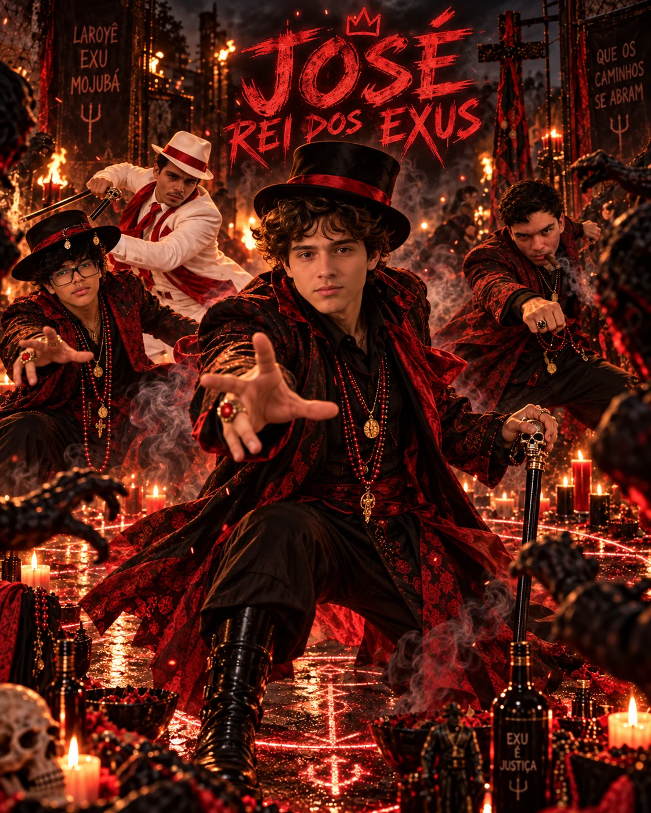
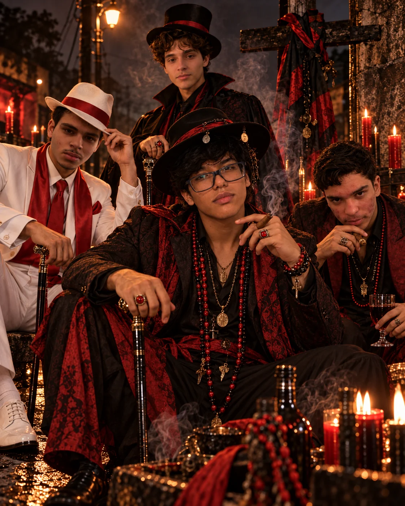
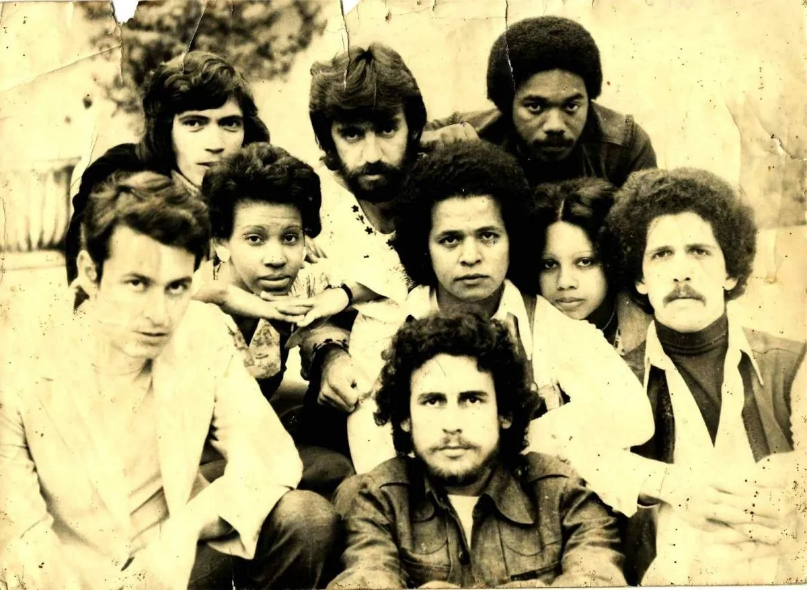
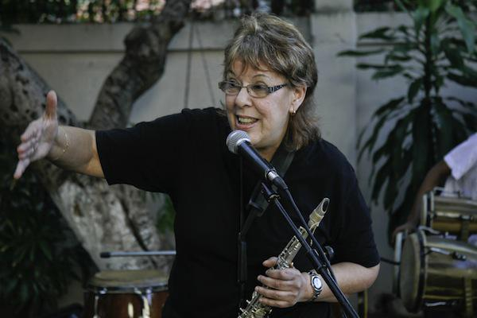

CINTA 01 · CARA A
1976
LA HABANA
S—76
SÍNTESIS
CARLOS
ELE
MIKE
JOSÉ MARÍA
TEMA 4
VOCES
“solo la música tendría nombre”
PULSA PARA EMPEZAR
01LUISAPERTURA
Fuente: Carlos Alfonso / Magazine AM:PM
02 ORIGEN
DE TEMA 4
A SÍNTESIS.

1972TEMA 4un cuarteto vocal
VOZ · BAJOCARLOS ALFONSOfundador y futuro director
VOZ · TECLADOSELE VALDÉSde Tema 4 a Síntesis
COMPOSICIÓN · DIRECCIÓNMIKE PORCELJOSÉ MARÍA VITIERnúcleo fundador
PRIMERA FORMACIÓN FOTOGRÁFICANUEVE MÚSICOSvoces, rock y escena
UN NOMBRE PARA EL GRUPOSÍNTESIS
La idea era que nadie estuviera por encima del conjunto.
02LUISORIGEN
Fuente: Síntesis / Magazine AM:PM
03 PRIMERA ETAPA
ROCK SINFÓNICO
EN LA PRIMERA ETAPA.
14·12·1978 concierto inaugural
ENE—FEB 1979 primera gira internacional
S
SELECTOR · 00
CUATRO REFERENCIAS
Elige una referencia para ver qué aportó a esta primera etapa.
VOCESPOESÍATEATROSINTETIZADORES
REFERENCIAS
PARA EMPEZAR.
PARA EMPEZAR.
03LUISROCK EN CUBA
Fuentes: Síntesis / OnCuba / Magazine AM:PM
04 TRANSFORMACIÓN
LUCÍA HUERGO
Y LOS AÑOS OCHENTA.

SAXOFÓNFLAUTACLARINETEOBOETECLADOSTECNOLOGÍA DIGITAL
AREITO · 1984HILO
DIRECTO
DIRECTO
ASOYÍNMEREGUO
En estas canciones ya se mezclan electrónica y elementos afrocubanos.
1987 · NUEVA ETAPA
1987
PRÓXIMO ACTO · ANCESTROS
04JOSÉTRANSFORMACIÓN
Fuentes: Granma / Síntesis / discografía Areito
1987 · NUEVA ETAPA
1987
LA HABANA
ABRIL · 1987
ANCESTROS
ESTUDIOS EGREM · LA HABANA
PUNTO DE PARTIDAMANTILLAconvivencia y observación
ESCUCHA
LENGUA
RITMO
TRABAJO CONLÁZARO ROSacentuación · entonación · ejecución
Estudio del folclore y la danza para tratar el canto ritual con rigor.
PERSONAS CLAVE EN EL DISCO
1987ANCESTROS
CARLOS ALFONSODIRECCIÓN MUSICAL · PRODUCCIÓN
LUCÍA HUERGOPRODUCCIÓN
LÁZARO ROSVOZ · ACENTUACIÓN · ENTONACIÓN
JOEL DRIGGSTAMBORES BATÁ
VOZCANTO LUCUMÍ
RITMOBATÁ
SONIDO CONTEMPORÁNEOROCK
EN EL MISMOARREGLO
EL CANTO Y EL BATÁ
CAMBIARON LOS ARREGLOS.
Influyeron en el ritmo, la voz y la composición.
PRÓXIMO · DE LA CEREMONIA AL ROCK05JOSÉANCESTROS
Fuentes: Magazine AM:PM · notas de Ancestros